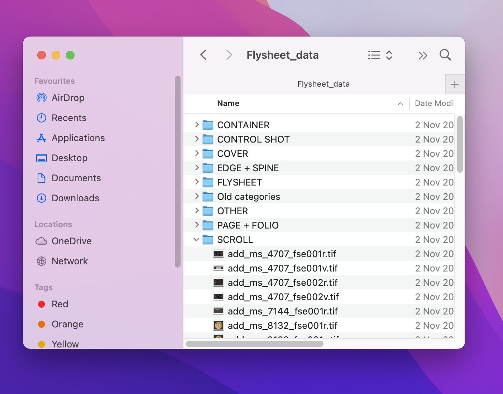

4 Creating training data: annotation
When developing our project we used a supervised machine-learning approach. This means that our model “learns” from seeing examples of input data; in this case, images and examples of the labels we want these images to have. In our particular example, this would mean the model has examples of “fake” flysheets and real flysheets to learn to detect those incorrectly labeled.
4.0.1 How did we create training data: who does the annotation?
Generating training data is extremely important for supervised machine learning, but it is often given less attention than training or deploying models.
There are a few main broad options for generating annotated training data:
- Pay “crowdworkers”
- Crowdsource it via volunteers
- Do it yourself (DIY)
We’ll briefly discuss each option to explain what they mean but we'll mainly focus on discussing the option we chose.
4.0.2 Crowdworkers 💪
This refers to commercial services where people are employed (or more commonly paid a piece rate) for annotating data. Examples of this include the Mechanical Turk platform from Amazon, but many companies are offering some form of this service.
This type of service is likely not a common approach for GLAM institutions and wasn't relevant to this project. The cost and time spent on setting up this task would unlikely be worthwhile.
4.0.3 Crowdsource via volunteers 💝
Another potential option is to use crowdsourcing via volunteers. This is a well-established practice in GLAMs for generating collection data and allowing people to explore and contribute to research. There are also nice examples of crowdsourced data being used to train computer vision models, for example, the Newspaper Navigator project Lee et al. (2020) used training data generated from Beyond Words to train an object detection model for historic newspapers. Whilst this data wasn’t created for training machine learning models it was still possible to use the data for this purpose.
There is growing interest in how machine learning and crowdsourcing can be combined and mutually benefit from each other. See, for example Humans in the Loop a crowdsourcing project from the Library of Congress.
This option wasn't considered seriously for this project for several reasons:
- there is overhead in designing and setting up crowdsourcing tasks that weren’t feasible for this particular project;
- the amount of training data we needed was quite limited to start with, so it might not warrant the effort of setting up a crowdsourcing project;
- we wanted to quickly develop a proof of concept using a small training dataset and develop from this starting point.
Whilst this approach might work well in some situations, this should not be seen as an ‘easy’ way of getting ‘free’ training data. Since the process of creating training data often ends up as an iterative process it’s important to make sure you test the annotations you are producing can be used early on, ideally before asking volunteers to contribute.
4.0.4 DIY 🛠
A remaining option is for the team working on the project to produce the training data themselves. If you want to train a machine learning model on a task for which an open dataset does not exist, this is often a required first step. This is the option we ended up choosing. This is the most appropriate approach to developing new training data from the options available for ‘proof of concept’ applications of machine learning. Even if you are lucky enough to find an existing dataset for the task you want to do, you will likely still want to create some new data for testing your model's performance on your specific data.
4.1 What annotation tool did we use?
Microsoft️ Windows File Explorer! More specifically, we create a folder for each label in our training data and add images that belong to that label so it looks something like this:

In our case, each image should belong to only one category e.g. CONTAINER so any images matching this category should go in this folder.
4.1.1 Why did we use this approach?
Organising data and the associated labels in this folder is a fairly standard way of distributing machine learning datasets. This format is supported in various downstream machine-learning frameworks.1
However, whilst this is often used as a ‘distribution’ format, it is perhaps slightly unusual to use it to collect annotations. The reason we chose to use this approach:
- minimal setup costs (both in terms of time, effort and cost);
- using folders to organise files is familiar to most people already;
- it more closely fits into existing workflows.
This final point is worth additional thought when trying to do a practical ML project within a GLAM setting. Annotating data can be time-consuming and, depending on the task, quite boring. Making annotation a brand new ‘separate’ activity removes it from existing work and may lead to fewer people being able to contribute to this activity. In our particular situation, since members of the HMD team were already working through image files in preparation for ingest into their digital preservation store LibSafe, taking the extra step of putting any ‘fake flysheet’ they spotted into the ‘training folder’ wasn’t too far outside of their work process. If we had collected annotations through a more formal platform, the annotation process would be a separate activity, likely done through a web interface. Whilst this interface might be faster if the sole activity is doing annotations, a more informal approach may work better if the annotation process is to fit into an existing workflow.
How annotations are collected is an area of the ML pipeline where GLAMs may diverge from the more traditional workflows used in industry/commercial settings. The model of ‘farming out’ annotating as a full-time activity will usually not be financially possible (and there might be other professional or ethical concerns about doing so). Beyond this, it might also not make sense to try and replicate a ‘full-time’ annotation approach when the ML project has limited resources available. Instead, in these settings, thinking about how annotations could be collected more easily as part of a workflow might be sensible.
4.1.2 Why shouldn’t you use this approach?
There are limitations to this kind of approach that will make it unsuitable for some tasks. The first obvious limitation is that we can only annotate for performing classification using this approach, as the label for each image comes from the folder in which it sits. It could be a better approach for multi-label datasets, i.e. where each photo can have one, multiple or no associated labels. Beyond the tasks that this kind of approach can’t easily support, some other limitations include the following:
- minimal or no provenance information about who did the annotation, when it was done etc.
- no easy way of managing annotations as ‘tasks’ for different team members
- no easy way of generating inter-annotator agreement scores (measures of how much different people completing the annotations agree with each other).
Most of these challenges stem from the fact that a file system isn’t intended for this kind of task. Although file systems usually record some information about changes to folders etc., this is not always very granular.
The final limitation of not being able to generate inter-annotator agreement scores are potentially very important for some projects. For example, a project aiming to apply metadata labels automatically to images or documents should carefully assess how much annotators agree with each other by getting multiple people to label the same item. If there is a lot of disagreement between annotators, then the labels might be ambiguous, or the task of giving the correct label might be a challenging one requiring expert knowledge. In these scenarios, it is worth the extra effort of setting up a proper annotation tool. Some options for these annotations platforms include:
An exploding number of start-ups and companies are promising to have solved data labeling and curation once and for all, so this list is not comprehensive. Each tool or platform will have benefits and limitations that should be considered. Sharing insights into using these platforms and tools for generating training data is a potential area for further GLAM collaboration, particularly as setting up some annotation tasks is a non-trivial process. There are substantial advantages to using an open-source tool, but this should not be the sole consideration.